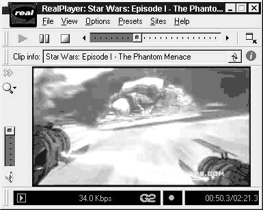

@CCESS
Watts Online
|
November 24 1998 |
 News |
But first . . . Star Wars * Australians should go here and search for Star Wars for faster, local downloads. FIRST an apology. My browser survey is not ready for public release. For a start I am not totally happy with the sample size. There have been 75 responses from readers to the six questions about browser use posed on November 10. Thanks to all those who e-mailed responses so quickly, and for the comments attached. I would like a few more reactions, however; perhaps getting the number up to an even 100 for a broader assessment. By the way, a cursory browse of responses shows Netscape the overwhelming favourite. One of the other reasons for the lateness in providing results is that I got distracted. This is so easy to do on the Web. One minute you are saying "I must have a look at the survey", the next there is this site that you just must see . . . linked to another, even better and so on. Even if you are new to the Web, you will know what I mean. So, when I should have been calculating survey results I was watching the preview of the new Star Wars prequel. As were millions of others. The BBC reported last week that the launch on the Web of the "rushes" for Star Wars Episode One: The Phantom Menace has created on-line congestion not witnessed since the publication of the Starr Report. This may surprise serious types because the two-minute Star Wars preview contains only fleeting jerky images and pretentious text. The "Starr Wars" report into President Bill Clinton's sexual activities, by comparison, contains material that threatens a presidency. But never under-estimate the power of George Lucas's films, particularly with the Internet community who consistently vote Star Wars the best film of all time. Star Wars, made in 1977, may have been the first of the blockbusters, but it is actually only episode four of a series. The Web preview -- and the trailer being shown to huge American audiences in cinemas -- is of episode one. The official Star Wars site was the only place outside selected North American cinemas that people could see the trailer early last week. Dozens of unofficial sites have since sprung up. At the sites you can watch the trailer in RealPlayer, Quicktime or .avi formats. Episode one, which features stars such as Samuel L Jackson and Ewan McGregor, tells the story of the young Anakin Skywalker at the start of his journey to becoming arch-villain Darth Vader. The hype for the film is such that two-thirds of the 500-strong audience for Denzel Washington's The Siege at a Los Angeles cinema walked out after the Star Wars trailer had finished. The BBC reports that film distributors have sought to encourage cinema-goers to stay by repeating the trailer at the end of films as well. This is just the trailer. Imagine what will happen when the whole film is released next May. All articles Copyright: © West Australian Newspapers
|


Computer e-mail: David
Watts.
David Utting
General queries and site recommendations: @ccess